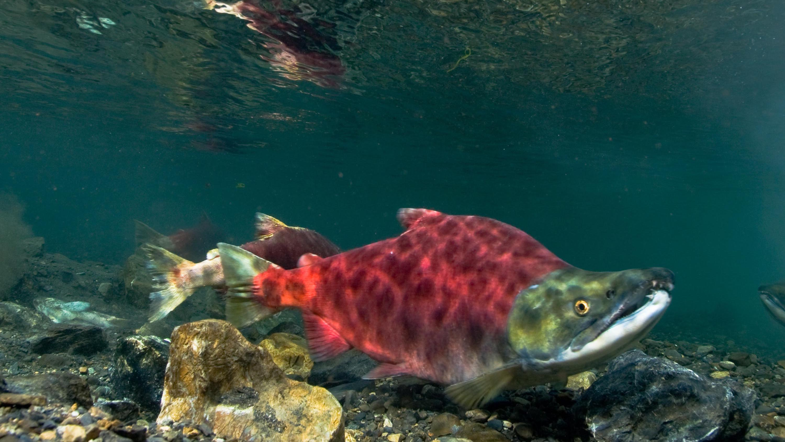

About Salmon
Salmon connect freshwater, ocean, and land ecosystems. When salmon populations decline, it disrupts the natural balance. Many plant and animal species lose important sustenance, while streams, rivers, and forests become less productive and biodiversity declines. Urban development has led to the loss of many salmon-bearing streams in Vancouver, leaving only three wild salmon tributaries remaining today.
